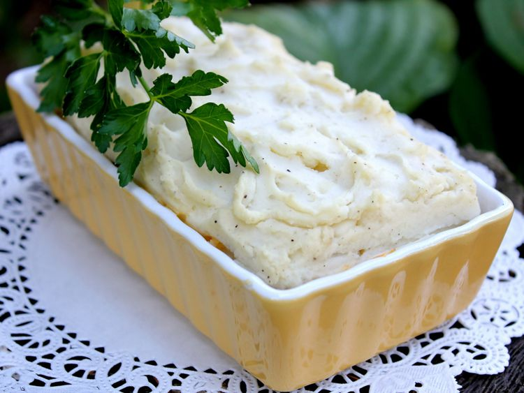

Shepherd Pie

Description
Shepherd’s pie, dish of British Isles origin that makes use of vegetables and
chopped meat cooked in a casserole topped with or surrounded by mashed potatoes.
Ingredients
- Ground Beef
- Green Beans
- Mushroom soup canned
- Onion
- Cheddar Cheese
- Mash Potatoes
Steps
- Preheat an oven to 350 degrees F (175 degrees C).
- Cook and stir ground beef in a skillet over medium-high heat until beef is
browned, about 10 minutes. Drain fat. Mix in green beans, cream of mushroom soup, and onion.
- Pour beef mixture into a 2 quart casserole dish and top with Cheddar cheese. Spread mashed potato on top.
- Bake in the preheated oven until the pie is hot, and the mashed potatoes are golden brown, about 30 minutes.